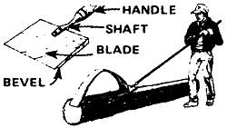

I just finished reading MOTHER NO. 38 . . . and nearly cried when I got to "We Homesteaded Without Capital" on page 84. Not because Jan and Jim Hilberer had no capital (they seemed rich in everything else). But because they peeled all the logs for their cabin with a drawknife! That's probably why it took them seven months to construct the dwelling.
When I was a boy in the Arkansas Ozarks, my father made a business of supplying telephone poles and pilings to commercial customers. And every one of those 50- to 100-foot-long timbers had to be peeled right in the woods. And let me tell you that if we'd used drawknives to handle that job, all those long poles would still be standing. (Not even Bell Telephone could have afforded 'em!)
Even back in those days, though, we had a far better way of handling that task. What we did was straighten out a heavy-duty garden hoe until it resembled a Yankee sidewalk scraper, and then use a file to keep a razor-sharp beveled edge on the business end of our new tool. (And the heavier the blade one of these strippers has, the easier it is to keep a beveled edge on it.)
Boy, would that thing take off the bark! It'd just strip away a three- or four-inch-wide slice that was four to five feet long with each stroke, as long as you remembered two little tricks: [1] you had to keep the beveled face of the blade's edge down so it wouldn't dig into the wood, and [2] you always had to limit your strokes to a length that was just a little shorter than the hoe's handle . . . otherwise the strips of bark would slide right up and cut into your gloves.
(There is, of course, another kinda minor little wrinkle to making this stripping job as snag-free as possible: Trim all branches off flush with the trunk before you start to peel away a downed tree's bark.)
The use of these strippers or peeling spuds" allowed our workers to stand upright with very little stooping, keep a rhythm going (just the way a sailor does when he's swabbing down a ship's deck with a mop), and strip a pole bare in minutes.
Still, I believe that even this tool could be improved. If, for instance, a simple deflector made of sturdy sheet metal or strap iron were bolted to the spud's handle about a foot back and slightly offset to one side of the cutting blade . . . I think it could be made to turn each strip of bark away from and to one side of the workman using the tool. This would allow you to make a much longer stroke on each cut without getting a long strip of bark stuck through your hand or between your eyes. It might even permit you to make super-long "walking" strokes from one end of a log to the other . . . all in one swipe.
(EDITOR'S NOTE: Tom Hodges described a tool much like this one on page 122 of MOTHER NO. 40, Peeling spuds can be so valuable to folks who've never had one, however, that we figured it wouldn't hurt to tell you abort 'em again. And besides, as you've just seen. Bob Mitchell's refinements of the basic tool should make one of these strippers even more valuable and enjoyable to use.)
|
 |
|
|